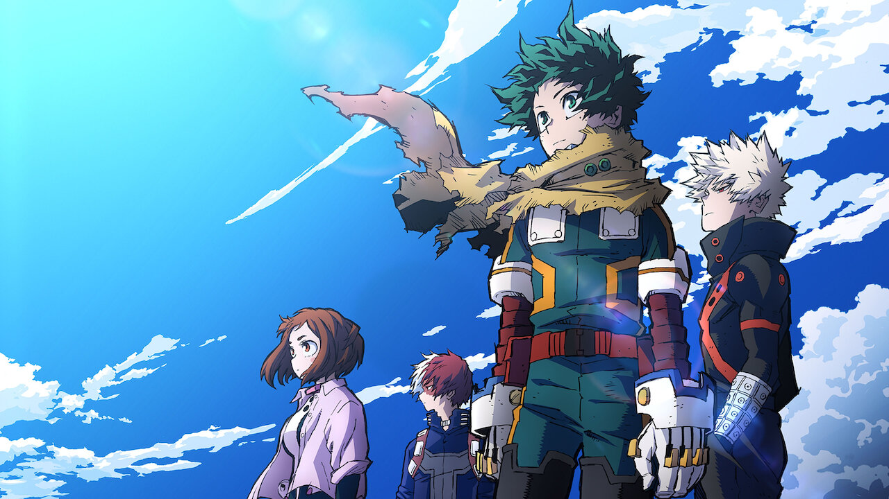
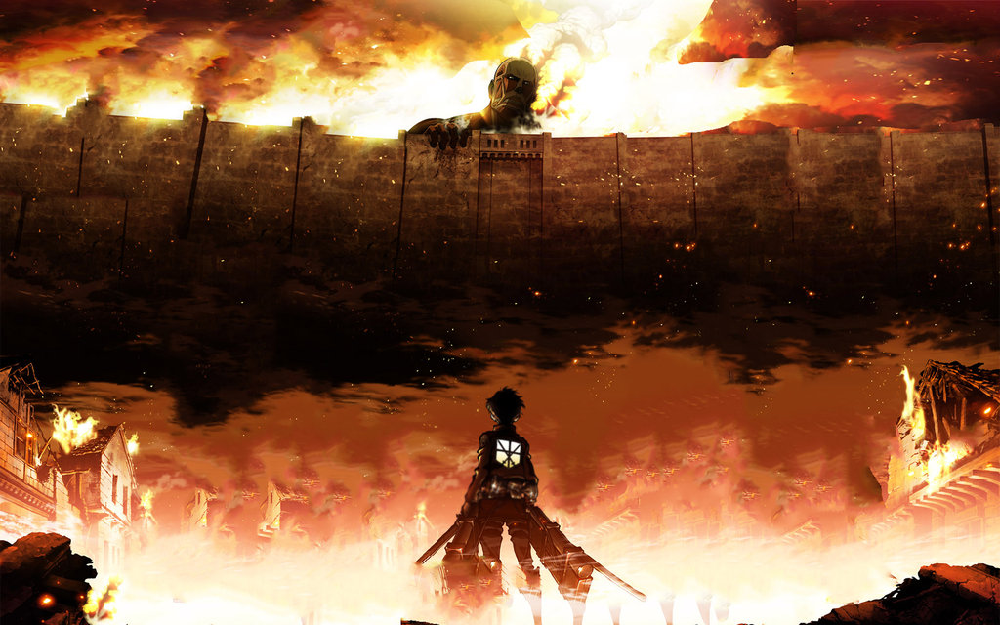
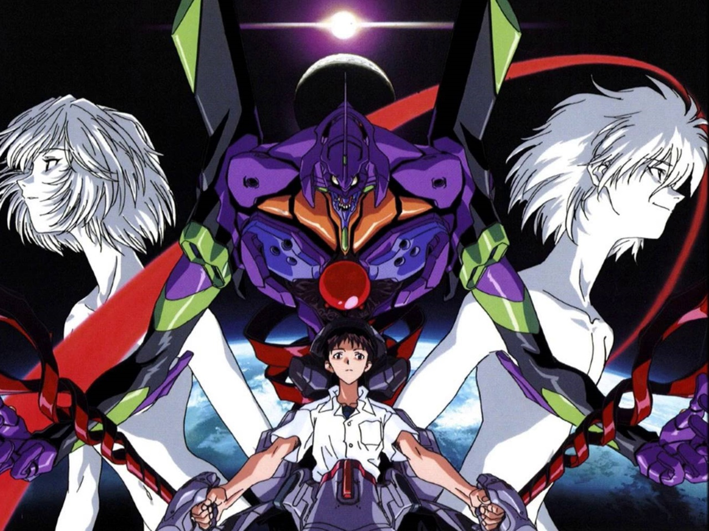
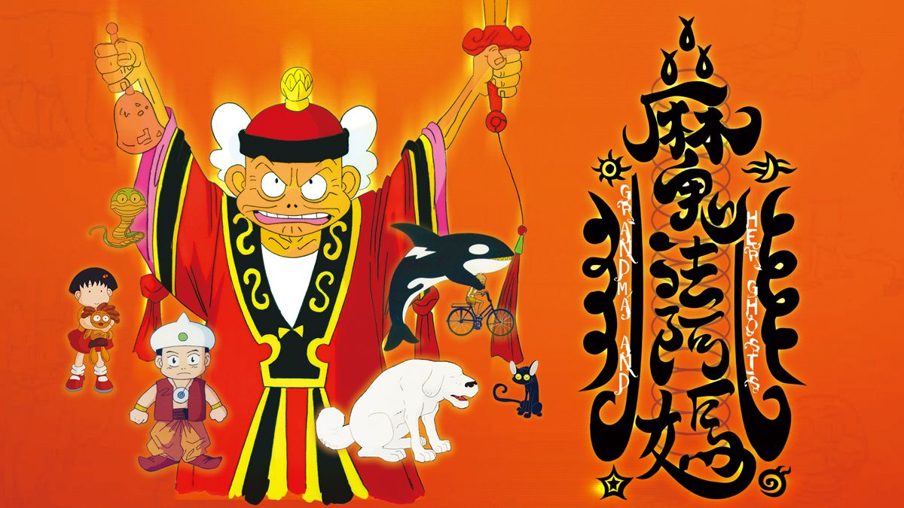

New
我的英雄學院
《我的英雄學院》是改編自漫畫家堀越耕平的同名漫畫，由動畫公司BONES製作的電視動畫。故事的核心圍繞綠谷如何在他最崇拜的英雄歐爾麥特的幫助下，進入雄英高中（一所專門培養英雄的學校），並逐漸成長為真正的英雄。劇情中充滿了驚心動魄的戰鬥、感人肺腑的友誼，以及對正義與責任的探討故事。
作品評分：7.5/10
作品名稱：2016

進擊的巨人
《進擊的巨人》是一部日本的黑暗奇幻動漫，改編自漫畫家諫山創的同名漫畫。故事建立在人類與巨人之間的衝突，人類居住在由高牆包圍的城市，對抗牆外會吃人的巨人，並尋找著關於巨人的答案。故事的主題由最初的熱血復仇逐漸變成對世間的人性、自由和正義的複雜解讀。
作品評分：8/10
作品名稱：2013

新世紀福音戰士
《新世紀福音戰士》是一部有著機甲風格的後世界末日動畫。故事背景設置在未來、一場世界性的大災難發生十五年後的東京。故事圍繞著主人公 -- 一名十幾歲的男孩碇真嗣，突然被神秘組織NERV招募去駕駛一種巨大的生物兵器——EVA，與被稱為使徒的可怕不明敵人進行戰鬥而展開。故事最初著重表現戰鬥場景和人物之間的對話，隨著故事情節的發展，逐漸轉為對人物內心世界的剖析。
作品評分：9/10
作品名稱：1995

魔法阿媽
《魔法阿媽》是上映於1999年的臺灣動畫電影，王小棣導演、黃黎明編劇、麥人杰人物設計與史擷詠配樂，以臺灣傳統信仰、鬼神觀與中元普渡為背景，講述祖孫間的真摯情誼，文英阿姨領銜的配音演出自然又有個性，親切感的鄉土魅力深入人心，是臺灣動畫電影具有代表性的作品。
作品評分：8/10
作品名稱：1998